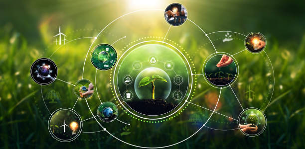
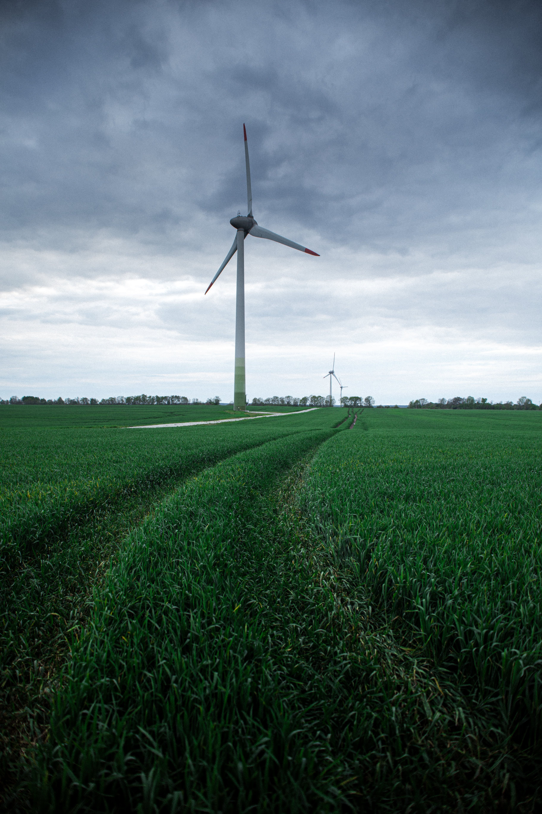
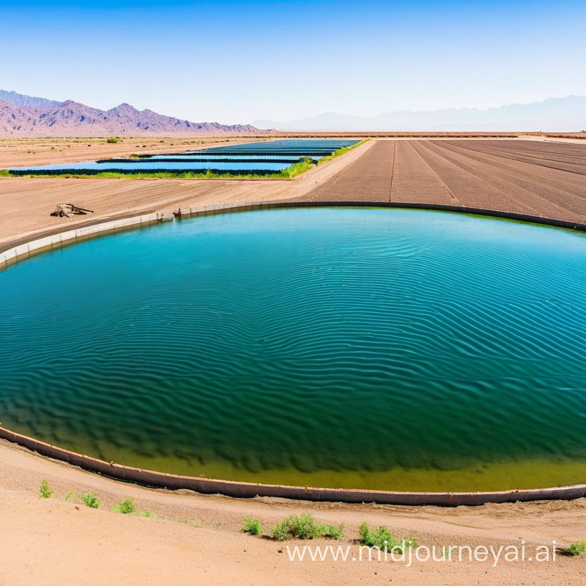
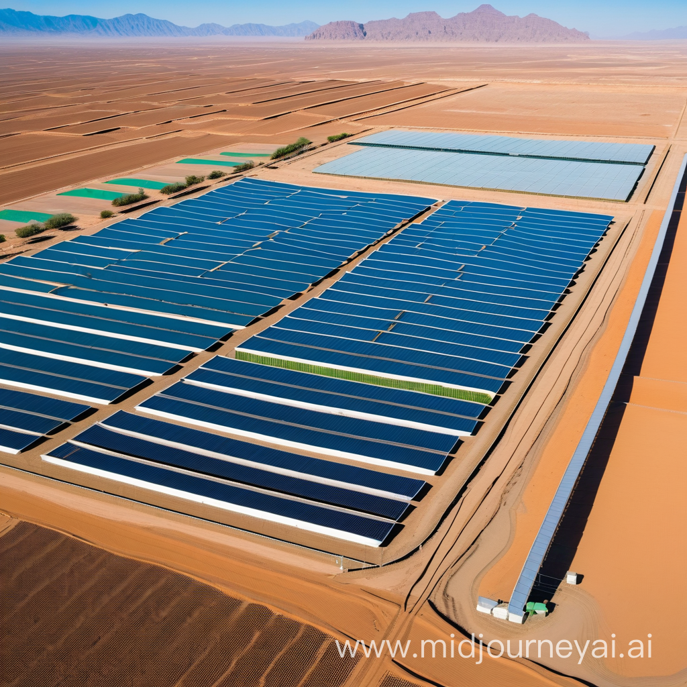
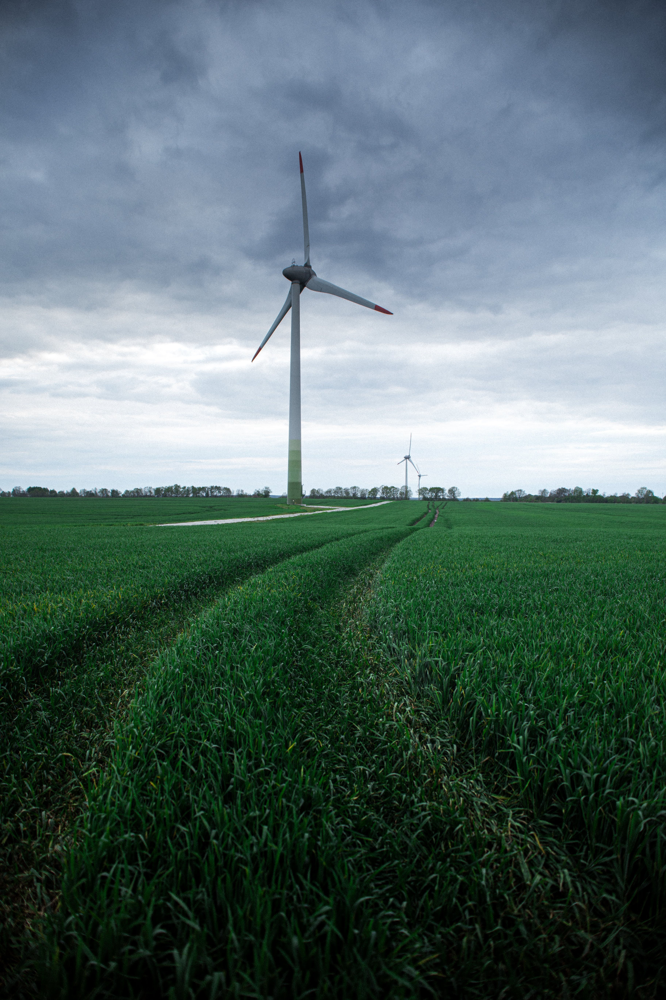
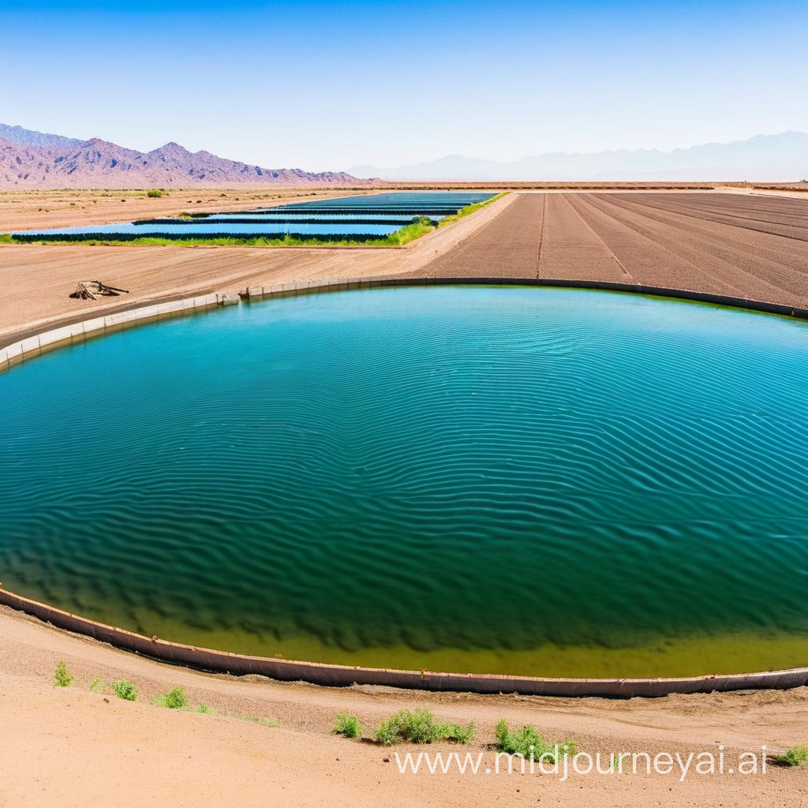
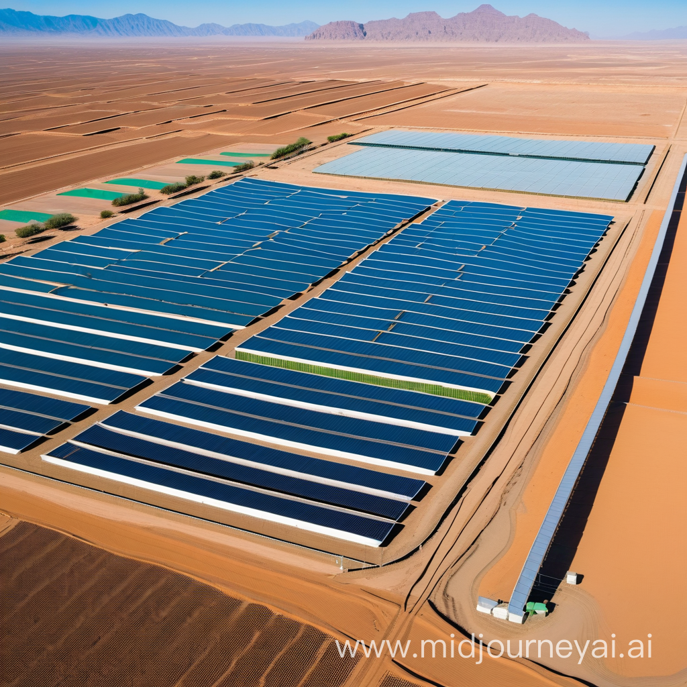
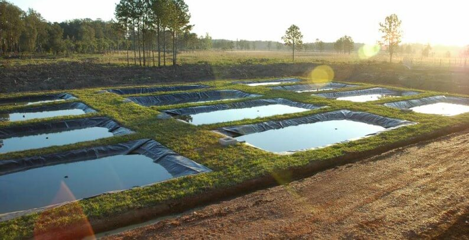
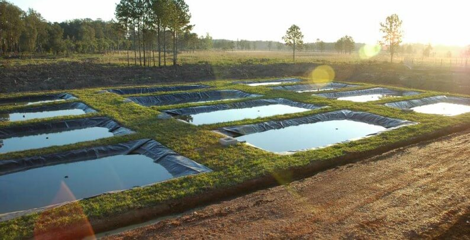

Soluções Sustentáveis
A sustentabilidade é um conceito que tem ganhado cada vez mais relevância nos últimos anos. Representa a busca pelo equilíbrio entre o desenvolvimento econômico, social e a preservação ambiental. A ideia central é garantir que as necessidades da geração atual sejam atendidas, sem comprometer a capacidade das gerações futuras de suprir suas próprias necessidades.
O caminho para a sustentabilidade requer inovação, cooperação global e a adoção de tecnologias e práticas mais limpas e eficientes. Com o compromisso coletivo e ações estratégicas, é possível criar um futuro mais justo e ecologicamente equilibrado para as próximas gerações.
Energias Eólica e Solar
Dentro do contexto de sustentabilidade, a transição para fontes de energia limpa e renovável torna-se crucial. A energia eólica, proveniente da força dos ventos, e a energia solar, derivada da luz do sol, estão entre as alternativas mais promissoras. Essas fontes não só reduzem nossa dependência dos combustíveis fósseis, diminuindo a emissão de gases de efeito estufa, como também são inesgotáveis à escala humana. Além disso, a tecnologia associada a estas formas de energia tem se tornado cada vez mais acessível e eficiente, tornando-as opções viáveis e econômicas para diversos países.
Aquaponia em Terras Secas e Inférteis
A aquaponia é uma técnica que combina a aquicultura (cultivo de peixes) com a hidroponia (cultivo de plantas sem solo). Em sistemas de aquaponia, os resíduos produzidos pelos peixes servem de nutrientes para as plantas, que por sua vez purificam a água, que é então recirculada de volta para os peixes. Para terras secas e inférteis, essa técnica representa uma solução inovadora. Ela permite a produção de alimentos em locais onde a agricultura tradicional seria quase impossível, economizando água e maximizando a produtividade em áreas limitadas.
 





 
